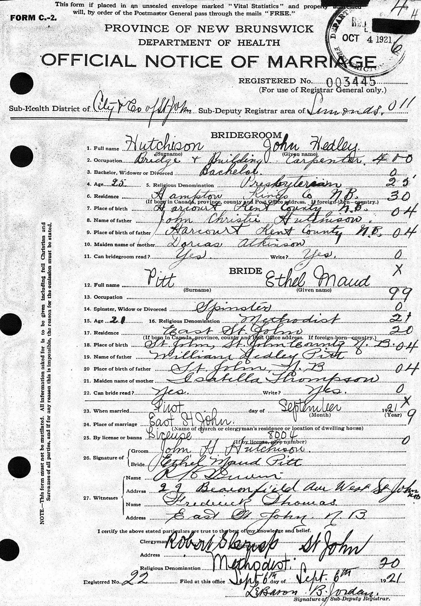
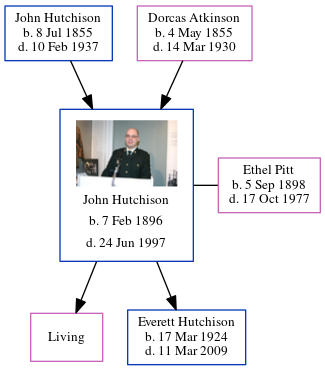

Ethel Maud Hutchison (née Pitt) 1898 - 1977
[ Home ] | [ Calendar ] | [ Surnames Index ] | [ Errors ] | [ Family History ]Ethel Pitt, the wife of John Hedley Hutchison (the fourth cousin once-removed on the father's side of Nigel Horne), was born in New Brunswick, Canada on 5 Sept 18981,2,3,4 and married John (a trainman on railway with whom she had 2 children: Dorothy and Everett Hedley, along with 1 surviving child) in St John, New Brunswick, Canada on 1 Sept 1921.
During her life, she was living at her birthplace in 19011; and in Providence, Rhode Island, USA on 1 Apr 19305 and on 1 Apr 19403.
She died on 17 Oct 1977 in Smithfield, Rhode Island, USA2,4.
Children
- Everett Hedley was born on 17 Mar 1924
Citations
- Canada Census 1901 - Findmypast (was the daughter of the head of the household)
- Social Security Death Index - Findmypast
- US Census 1940 - Findmypast (was age 41 and the wife of the head of the household)
- United States Obituary Notices - Findmypast
- US Census 1930 - Findmypast (was age 31 and the wife of the head of the household)
Media
Joh Hutchinson - Ethel Pitt - Marriage Certificate

Canada Census 1901 - CAN/CENSUS/1901/00611892
Social Security Death Index - USBMD/SSDI/037446841
United States Obituary Notices - US/TRIB/003522716
Family Tree
Map
Generated by ged2site. Last updated on Jul 3, 2024
Known Issues
Marriage date (1 Sep 1921) has no citations
No records of living with anyone